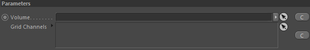
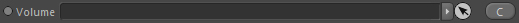
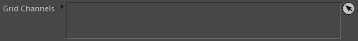

Quicktab
Parameters
Parameters

Volume

Takes a Volume to define the area in space the emitter is allowed to emit data into.
Grid Channels

Link any Channel Settings containers in here to define which channels the emitter should emit to (and which emission settings are used for the corresponding channel).
See Container::Channel/Settings for more information.